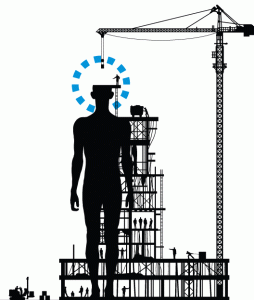

Leggo nel comunicato (in draft) degli Stati Generali dell’Innovazione:”Una strategia coerente di open data deve garantire: l’uso pubblico dei database di interesse nazionale con una particolare attenzione ai dati territoriali;”.
Gli Stati Generali dell’Innovazione si sono appena conclusi. Ho partecipato; là ho incontrato Renzo Carlucci, direttore di GEOMEDIA. Ci siamo tenuti compagnia, abbiamo seguito i vari interventi. Ogni tanto leggevo i suoi “cinguettii” sul grande schermo, alle spalle dei relatori. Entrambi leggevamo i contributi di chi interagiva in rete (per esempio, questo). Insieme abbiamo preso parte all’open talk sull’Open Government: per circa due ore, oltre 30 persone hanno ragionato, prima su una mappa mentale dell’Open Gov, quindi cercando di raccogliere proposte, come contributo per una road map di SGI.
A proposito di proposte, ho portato con me agli SGI alcune slide, preparate con la “redazione” di TANTO e con alcuni colleghi del Consiglio Scientifico di ASITA. Le abbiamo “confezionate” prendendo spunto da due delle tre proposte che avevamo inoltrato per Agenda Digitale (TANTO ne ha dato conto qui). Le ho presentate e commentate durante l’open talk.
E’ quasi ovvio –per una road map dell’innovazione digitale- suggerire l’inserimento di un richiamo agli organismi nazionali deputati in materia di DB territoriali e di attuazione della direttiva INSPIRE.
“produttività della PA, ossia di rapporto tra risorse impiegate e valore restituito ai cittadini”.
Alcune slide sono ripetitive e non mi pare che necessitino di commenti: la creazione delle IDT consente di ridurre il disordine (quindi gli sprechi) e, nel contempo, favoriscono la comunicazione tra produttori e utilizzatori di dati geospaziali. Vorrei solo aggiungere che ragionare in termini di Value Chain potrebbe essere utile, ad esempio per razionalizzare gli sforzi all’interno della PA, migliorando la distribuzione di competenze e ruoli, anche in un’ottica di partenariato tra pubblico e privato.
Ma una “geo” proposta per una road map dell’innovazione digitale che consideri soltanto suggerimenti come quelli definiti per Agenda Digitale (slide 13 e 14), rischiano di risultare mere dichiarazioni d’intenti, condizioni soltanto necessarie per includere l’Informazione Geografica come componente per l’incremento di innovazione nel nostro Paese.
Attraverso un po’ di botte e risposte via mail è venuta a galla un’ulteriore proposta, quella descritta con le ultime slide. E’ giusto un esempio di azione più concreta, legata alla “vita” delle organizzazioni pubbliche. E’ articolata in tre passi:
-      raccolta di buone pratiche (esistono, esistono ! )
-      loro diffusione, accompagnata con iniziative di sensibilizzazione dei potenziali stakeholder e affiancamento delle organizzazioni interessate, per favorirne la corretta implementazione
e, soprattutto, terzo passo, recepimento delle azioni pianificate per creare:
cicli di dati geografici “sostenibili”,
reti sistemiche tra i portatori d’interesse delle IDT e
“sistemi di misurazione del livello di prestazione orientati al miglioramento continuo, alla valutazione degli impatti delle azioni pianificate e al confronto, in un’ottica di trasparenza, tra i servizi erogati dai diversi enti”
Così come l’incontro degli SGI ha il valore di “prima tappa” di un percorso che si svilupperà nei prossimi mesi, come risulta dalle conclusioni riportate nel comunicato finale di questa “due-giorni”, anche il contributo che abbiamo provato a portare come settore IG può crescere e articolarsi. Repetita iuvant:
’Mi tornano alle orecchie le frasi conclusive pronunciate dagli esperti di Geospatial Revolution Project: “Stiamo facendo questo insieme …”.’
TANTO si è già occupatodi Stati Generali per l’Innovazione, per esempio qui, e alcuni di noi partecipano alle discussioni iniziate sul forum del sito, su FB, su Twitter e altrove, in preparazione dell’evento previsto a Roma, il 25-26 novembre 2011.
Questo scritto unisce due miei post, pubblicati sul sito di SGI: qui e qui. Incontrandoci al “bar dietro al router” capita talvolta che uno di noi esclami frasi come: “Pensa tu quante idee su usi e applicazioni dei dati geospaziali ci saranno fuori dal ‘circolo dei geomatici’?”.
L’appuntamento di Roma è un’occasione per l’incontro tra addetti ai lavori, portatori d’interessi e utilizzatori. Complice l’atmosfera concentrata sulle possibilità di crescita per il nostro Paese, potrebbero scoccare scintille a cui fornire carburante.
La Pubblica Amministrazione rappresenta generalmente il soggetto più rilevante nel processo di qualificazione della domanda e di acquisizione delle informazioni. Essa funge inoltre da volano in molti settori menzionati. Infine, le informazioni territoriali sono anche alla base delle tecnologie digitali che stanno cambiando il nostro modo di interagire con le persone e ciò che ci circonda: Location awareness, Digital interaction, Towards all things computing e Augmented reality… rivestendo quindi un peso rilevante per il futuro dell’economia digitale.
Un’altra peculiarità delle informazioni territoriali è quella di essere posseduta e mantenuta tra numerosi soggetti. E’ fondamentale incoraggiare la costituzione di infrastrutture per accrescere l’accesso e la disponibilità di geo-dati, la cui organizzazione sia basata sulla co-operazione: per l’integrazione e l’armonizzazione dei dati, per condividere le policy riguardanti la loro distribuzione. Occorre individuare modi che aiutino il ri-uso delle informazioni geo-riferite e la valorizzazione delle applicazioni della geomatica per tutte le sfide che attendono la nostra società, (ICT per l’ambiente, assistenza medica sostenibile, promozione della diversità culturale, eGovernment, mobilità di persone e merci, …).
Infine, una terza peculiarità delle informazioni territoriali è quella di essere essenziale per far prosperare la ricerca e l’innovazione del comparto: realizzare nuovi prodotti e servizi legati all’intrattenimento, alla mobilità individuale e collettiva, all’assistenza alle persone, ecc.; per la corretta comprensione dei fenomeni che avvengono nella realtà; per creare nuove professionalità e nuove occupazioni. Rafforzare il dialogo tra il mondo della Geographic Information e l’ICT nella sua globalità può generare nuove idee per la ricerca e orientare le strategie per attuare servizi in scenari futuri, in contesti di complessità crescente, coinvolgendo i cittadini, soprattutto per rispondere alle esigenze delle giovani generazioni.
Il mondo dell’Informazione Geografica deve partecipare e contribuire –uno tra tutti- come portatore d’interesse per la costruzione di una prospettiva condivisa per l’Italia e per un cambio effettivo nella politica dell’innovazione, verso la realizzazione di un sistema di innovazione diffusa, un’innovazione che nasce dalle comunità e che al benessere delle comunità, in quanto reti relazionali, economiche e sociali, è principalmente rivolta.
A partire dall’epoca napoleonica fino agli anni ottanta del secolo scorso la gestione delle informazioni geografiche di una nazione sono state governate prevalentemente da soggetti statali: ad esempio Ordnance Survey РUK, Service du Cadastre РFrancia; gli enti cartografici militari e catastali, dell’Italia unitaria).
Questa soluzione organizzativa ha assolto le esigenze per il governo del territorio sino a quando l’incremento della produzione di cartografica da parte di altri enti, soprattutto a livello regionale e locale, indotto da un maggiore fabbisogno di dati territoriali e di migliore qualità, supportata dall’avvento di nuove tecnologie, hanno fatto emergere l’esigenza di definire nuove modalità organizzative.
Dall’inizio degli anni novanta è iniziata la ricerca di soluzioni per razionalizzare la produzione dei dati territoriali tra i diversi livelli della Pubblica Amministrazione, originariamente in un’ottica molto pragmatica: ridurre l’impegno economico e garantire un uso più efficiente delle risorse per acquisire e gestire i dati geospaziali. Si deve alla presidenza Clinton la costituzione della National Spatial Data Infrastructure, nel 1994: una deliberazione per promuovere le relazioni intergovernative, coinvolgendo i governi statale e locale nella produzione di dati geospaziali e migliorare le prestazioni del governo federale. A seguire, altri Paesi hanno avviato progetti analoghi (Australia, Canada, Giappone, …). Nel 2002 la Commissione europea ha lanciato un progetto, denominato INSPIRE, che mira a creare una Spatial Data Infrastructure  europea.
Nel tempo, gli obiettivi di queste infrastrutture sono stati ampliati: si √® fatta strada anche la promozione dell’uso dei dati geospaziali e del loro riutilizzo per molteplici scopi, non solo in ambito pubblico ma anche con crescente attenzione verso il settore privato, stante l‚Äôincremento di prodotti e applicazioni rivolte al mercato consumer.
Mentre questo processo è ancora in corso, nuovi temi sono apparsi, e influiscono sull’implementazione delle Spatial Data Infrastructure: espressi dal mercato (“l’uragano” Google maps), tecnologici (il semantic web, Internet of things, il cloud computing, …), sociali (Volunteered  Geographic Information), del settore pubblico (Open Government).
Dato per scontato il coinvolgimento del mondo della geomatica in questo scenario, le sue implicazioni e le sue diramazioni offrono lo spunto per ampliare ad altri ambiti la discussione e il confronto sulle prospettive, le opportunità che si prospettano, come sfruttarle, come affrontare e risolvere le problematiche e le criticità che si presenteranno.
Ho volutamente affrontato l’argomento prendendolo “da distante”. Le scelte per soddisfare i bisogni di informazioni geografiche di un Paese, sono state prese in passato (remoto e recente) dal livello politico, e non vi è ragione di immaginare un approccio differente: l’Informazione Geografica oggi, come le mappe in passato, sono un pilastro per il governo e lo sviluppo di un Paese. Proprio in ragione di ciò, essa è anche patrimonio della collettività. Seguendo l’invito di Stati Generali dell’Innovazione, l’estensione a un più ampio spettro di portatori d’interesse il dialogo sull’informazione geografica potrebbe dare contributi alla classe dirigente per attuare scelte rivolte “alla realizzazione di un sistema di innovazione diffusa, un’innovazione che nasce dalle comunità e che al benessere delle comunità, in quanto reti relazionali, economiche e sociali, è principalmente rivolta.”
Il melting pot su #opendata, #opendataitaly e¬†#opengov ribolle sempre pi√π anche qui in Italia, lo confermano le numerose Pubbliche Amministrazioni che stanno progressivamente mettendo in piedi portali che consentono l’accesso ai propri dati (con i dovuti distinguo riguardo le licenze adottate), un trend culminato con il recente lancio di dati.gov.it
Gli Stati Generali dell’Innovazione (@SGInnovazione) sono un movimento di associazioni, cittadini e aziende che, rimestando nel melting pot, contribuiscono a creare massa critica attorno ad alcuni degli argomenti che sono alla base di ci√≤ che ci interessa maggiormente:¬†‚Äúl‚Äôinnovazione nel governo dell‚ÄôItalia‚Äù.
L’appuntamento odierno di Bari, tenutosi al Cineporto¬†presso la Fiera del Levante, prevedeva una sessione mattutina con una prima¬†tavola rotonda¬†dal titolo “Open source, software libero e formati aperti per i dati pubblici: esperienze, criticit√†, prospettive”, alla quale hanno partecipato l’Assessore regionale all’Innovazione Nicola Fratoianni,¬†Davide Pellegrino ‚Äì Dirigente Servizio Innovazione della Regione Puglia, Marco Curci ‚Äì Direttore Divisione IT di Innovapuglia, Giuseppe Santo Barile (@realforense) del LUG Bari e Giuseppe Nicosia ‚Äì Circolo dei Giuristi Telematici Gur@work, in collegamento¬†Skype √® stata con noi anche Flavia Marzano (@flavia_marzano) di Stati Generali dell‚ÄôInnovazione,¬†moderava Morena Ragone (@morenaragone) di Puglia Creativa.
La seconda sessione intitolata “I diritti dei cittadini e delle imprese nel Codice dell‚ÄôAmministrazione Digitale”¬†ha visto come relatori¬†Ernesto Belisario (@diritto2punto0) ‚Äì Circolo Giuristi Telematici, Andrea Lisi ‚Äì ANORC Associazione Nazionale per Operatori e Responsabili della Conservazione Sostitutiva, Morena Ragone ‚Äì Puglia Creativa e Giovanna Brunetti ‚Äì CSIG Bari, moderava Ennio del Turco – CSIG Bari.
Numerosi e di notevole spessore sono stati gli interventi del pubblico, che hanno contribuito a rendere l’appuntamento particolarmente ricco di spunti, idee, confronti e anche scontri costruttivi. Io ho dovuto lasciare i lavori alla conclusione della mattinata, che comunque proseguivano con due ulteriori interessanti sessioni pomeridiane “Presentazione degli Stati Generali dell‚ÄôInnovazione di Roma del 25-26 novembre 2011″ e la tavola rotonda “Pensare l‚Äôinnovazione, realizzare l‚Äôinnovazione: dalle parole ai fatti, idee e problematiche aperte”.
Vi invito a scorrere il succedersi degli eventi¬†qui sotto, nella timeline dell’hashtag dedicato all’evento #SGIBari
Qui in Italia si continua a “miagolare” nel buio (sempre Quelo), con un Governo che continua a tagliare come un forsennato, aumentando tasse e incapace di rilanciare realmente l’economia, gli enti locali che devono cominciare a stringere la cinghia, e a farla stringere a noi di conseguenza, per finire a imprenditori e industria che hanno sempre meno risorse, e quando le hanno talvolta le usano male.
E in un tale disastroso panorama, probabilmente proprio da un settore per gran parte “immateriale” come quello della IT potrebbero nascere nuove opportunità di crescita, sostenibile peraltro. Ma bisogna partire da un ingrediente fondamentale, del quale qui a TANTO parliamo spesso e in svariati contesti: gli open data.
Non è per fare i soliti esterofili, ma proprio guardando al di fuori del proprio giardino si potrebbero trarre degli spunti interessanti per cominciare a risolvere qualche problema qui da noi.
Dicevamo, gli ingredienti sono open data disponibili, strumenti di sviluppo e una buona idea, il risultato è un’applicazione che può contribuire da un lato a migliorare la conoscenza, l’informazione Рe in alcuni casi la vita Рdi tutti, dall’altro creare un nuovo e dinamico settore della IT potenzialmente senza limiti.
E’ quel che, in un periodo appunto di grossa crisi, ha voluto fare il governo USA con Challenge.gov Рne aveva parlato già Antonio Falciano nel suo fantastico articolo Where to sleep in Turin Рun progetto con il quale vengono esortati i cittadini e le pubbliche amministrazioni a proporre e creare applicazioni basate sui dai aperti e liberi detenuti dalle agenzie e dai soggetti pubblici statunitensi. E’ in quell’ambito che nasce Apps for the Environment, un contest promosso dall’Agenzia USA per la Protezione Ambientale (EPA) al quale partecipano 38 idee/applicazioni che potranno essere votate dal pubblico fino al 7 ottobre prossimo. I vincitori non avranno premi in denaro, ma un pubblico riconoscimento e la possibilità di farsi “ospitare” la propria applicazione sul sito web dell’EPA.
Tra le pi√π interessanti, a mio avviso, ci sono Locus eWell un’app per iOS per la raccolta di dati in campagna sui pozzi, Air Quality Data Explorer che come √® facile immaginare restituisce grafici sui trend di parametri monitorati da stazioni di monitoraggio, Environs Now un’app per iOS e Android che mostra i parametri monitorati dalle stazioni di monitoraggio dell’EPA nei nostri dintorni, infine The Green Gumshoe un’applicazione che consente di segnalare siti nei quali si verifica un’emergenza ambientale di qualunque genere.
Un altro aspetto di Challenge.gov che mi ha colpito molto è il coinvolgimento diretto che ci si aspetta dagli stessi funzionari pubblici, che hanno la possibilità di lanciare a cittadini e imprese vere e proprie sfide (challenge appunto) da risolvere. Qui la directory di quelle lanciate ad oggi, per alcune delle quali ci sono anche premi in denaro.
In questo modo √® possibile generare un circolo virtuoso, che consenta a chiunque di mettersi in gioco con le proprie risorse, senza necessariamente essere degli sviluppatori o degli smanettoni impenitenti. La cosa fondamentale √® avere buone idee… e ovviamente dati aperti e liberi da poter utilizzare. Questo √® hacktivismo.
E allora mi auguro davvero che nello stesso governo italiano vi sia qualche mente illuminata, che al di là di promuovere cose come la IODL e MiaPA, includa finalmente nel CAD gli open data e creda seriamente che dare un impulso forte e imponente all’apertura dei dati detenuti dalle pubbliche amministrazioni possa contribuire a far risollevare l’economia nazionale.
In tal modo, da un lato verranno create opportunità per chi ha idee innovative e cerca un’occasione per metterle in atto, dall’altro la stessa PA sarà più trasparente verso i cittadini, guadagnandone notevolmente in termini di immagine e fiducia.
Il titolo di questo post non è altro che la sintesi della mia reazione emotiva dopo aver ascoltato le conclusioni del quarto e ultimo episodio di Geospatial Revolution Project. All’epoca stavo seguendo –insieme al consiglio scientifico ASITA- un’iniziativa così detta “nata dal basso”. Quelle conclusioni possono valere anche per l’Italia?
Agenda Digitale.org, è un’iniziativa promossa da un centinaio di personalità del mondo dell’ICT nazionale: dell’accademia, delle imprese e professionisti del settore. Lo scorso 31 gennaio costoro, autotassandosi, pubblicarono un appello sul Corriere della Sera, rivolto a tutte le forze politiche, “persollecitare il loro impegno a porre concretamente il tema della strategia digitale al centro del dibattito politico nazionale”.
Proposta lodevole, che ha ricevuto in poco tempo più di ventimila adesioni (speriamo anche di molti lettori di TANTO), ha innescato un processo partecipativo molto vivace e ha ottenuto il momento di massima visibilità pubblica in occasione del Forum PA, svoltosi a Roma in maggio.
I 100 giorni che sono intercorsi tra la comparsa della pagina sul Corriere e il convegno romano sono stati utilizzati dai coordinatori e animatori dell’iniziativa per raccogliere proposte organiche per un’Agenda Digitale per l’Italia. Lapalissiano il nesso con l’Agenda Digitale per l’Europa. Va chiarito che AD.org non nasce per scrivere alcun documento strategico: chiede alla politica (ai nostri rappresentanti politici) di provvedere. In quest’ottica, le proposte raccolte hanno semplicemente valore d’idee e suggerimenti.
Tra i “ventimila” aderenti, sono comparsi anche i nomi di alcuni componenti del consiglio scientifico di ASITA: un’opportunità quindi per seguirne insieme i progressi. Così, il 21 marzo, in  occasione di un incontro organizzato a Milano per “lanciare” questo percorso partecipativo aperto a tutti gli interessati, ASITA ha espresso la volontà di adoperarsi per concorrere al buon esito dell’iniziativa. Seguendo quindi le istruzioni fornite, abbiamo stilato e sottoposto agli organizzatori tre proposte come associazioni del mondo dell’Informazione Geografica nazionale, riferite a tre degli otto pillar su cui si basa l’azione strategica della Commissione Europea.
La prima fa riferimento a: “Interoperabilità e Standard”. Si propone che un documento strategico per lo sviluppo del settore ICT nazionale richiami ruolo e compiti delle strutture istituzionali dell’Informazione Geografica già operative e costituite per seguire il processo di recepimento della direttiva INSPIRE (Infrastructure for Spatial Information in Europe).
Il secondo suggerimento ha per argomento lo sviluppo delle Infrastrutture per i Dati Territoriali (IDT) sub-nazionali. Esso è rivolto al pillar “ICT per le sfide sociali”, ovvero a quelle azioni che colgono i vantaggi offerti dall’ICT alla società.
Queste tre proposte, insieme a tutte quelle pervenute (34 in tutto), sono state pubblicate on line l’11 maggio sul sito di Agenda Digitale e sono state inviate agli esponenti politici che hanno manifestato interesse per l’iniziativa e disponibilità a sostenerne le istanze (100 giorni dalla pubblicazione dell’appello!).
Prescindendo dai risultati, che forse scontano un po‚Äô lo stato di emergenza in cui si trova il Paese (ma questa √® un‚Äôaltra storia), √® stata un‚Äôesperienza stimolante e istruttiva per diversi aspetti. Ha osservato un organizzatore: ‚ÄúPenso che portare critiche sia semplice, cos√¨ come anche fare affermazioni generiche di proposte non specificate (“bisognerebbe fare cos√¨…”).¬† Molto difficile √® invece metterle per iscritto in modo organico e coordinato e scadenzato nel tempo. Il risultato mi sembra di rilievo, soprattutto se si considera che proviene dal basso, senza alcuna struttura organizzata‚Äù.
Per noi del consiglio scientifico di ASITA è stato un esperimento per verificare se e come si possa interagire e collaborare con comunità e network più vaste ed eterogenee, in termini di campi d’interesse, discipline, professionalità e competenze.
In questo senso, i contenuti delle proposte formulate, vogliono essere esempi d’istanze specifiche del nostro settore che però concorrono sia all’eliminazione dei diversi digital divide, sia a sviluppare la cultura digitale, in quanto esse fanno riferimento a tecnologie che stanno cambiando il nostro modo di interagire, con le persone e con ciò che ci circonda. Esse sono d’interesse generale e potrebbero quindi essere accolte in un documento strategico dell’ICT nazionale.
Ma partecipare a iniziative promosse in contesti più ampi e raramente frequentati possono avere anche un’ulteriore stimolante risvolto. Possono aiutarci ad amplificare il dibattito sul ruolo dell’Informazione Geografica, portandolo anche fuori dai confini del nostro settore, apportando nuova linfa, aggiungendo punti di vista mai esplorati, creando feconde contaminazioni: in sintonia con le valutazioni, le indicazioni e i suggerimenti esposti al  Panel Discussion: E-government and the Digital Agenda, svoltasi nell’ambito della Conferenza INSPIRE 2011 (ad esempio daKarel De Vriendto G. Pichler).
Sarebbe forse interessante se questa breve e circoscritta “sperimentazione” del consiglio scientifico ASITA –ad esempio in termini di metodo appreso ed esperienza partecipativa acquisita- si estendesse a più ampi spazi della comunità geomatica nazionale. Negli ultimi tempi sono emersi alcuni segnali stimolanti, in diversi contesti -“fisici e virtuali”-, forse ancora un po’ acerbi, che manifestano comunque un desiderio di “fare sistema” per promuovere l’Informazione Geografica.
In fondo, dipende da ognuno di noi: le occasioni in rete e nei luoghi fisici non mancheranno di certo. Mi tornano alle orecchie le frasi conclusive pronunciate dagli esperti di Geospatial Revolution Project: “Stiamo facendo questo insieme …”. Cosa ne pensano i lettori di TANTO?
Lezioni online per spiegare scienza e tecnologia Oilproject organizza con l’Istituto Italiano di Tecnologia una serie di lezioni divulgative su neuroscienze, nanotecnologie, farmacologia e macchine intelligenti, per raccontare al grande pubblico lo stato dell’arte della ricerca di base e applicata. Qui tutti i dettagli. Leggi tutto... (0)
Il GFOSS Day 2011 √® a Foggia I prossimi 24 e 25 novembre l’Universit√† degli Studi di Foggia ospiter√† il GFOSS DAY 2011, organizzato come di consueto dall’Associazione Italiana per l’Informazione Geografica Libera GFOSS.it Leggi tutto... (1)
TANTO non rappresenta una testata giornalistica ai sensi della legge n. 62 del 7.03.2001, in quanto non viene aggiornato con una precisa e determinata periodicita'. Pertanto, in alcun modo puo' considerarsi un prodotto editoriale.


{kind=link}